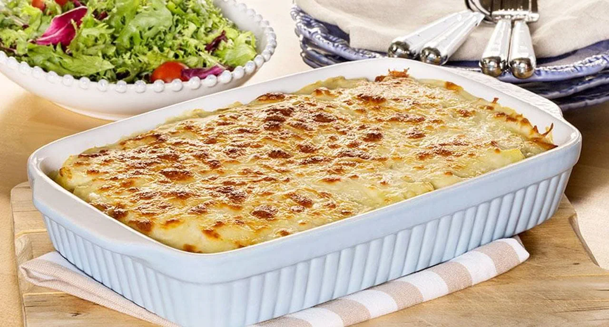

Bacalhau com Natas (Cod with Cream)

Description:
If there’s one thing Portuguese cuisine does well,it’s comfort food.
Perhaps the best example is Bacalhau com Natas,or Salt Cod with Cream.
It’s a delicious combination of flaky bacalhau served in a mixture of cream, potatoes, and onion, then topped with cheese and baked in the oven.
On a chilly evening it doesn’t get much better than taking a scoop of creamy Bacalhau com Natas from a freshly baked oven dish.
Its origins aren’t known, but it’s one of the most popular ways of serving bacalhau you’ll find in Portugal.
Ingredients: (4 ppl)
- 400g lascas de bacalhau – soaked for 6 hours, changing the water regularly.
- 400g potatoes – peeled and diced
- Olive oil
- 2 medium onions – diced
- 3 garlic cloves – minced
- 1 bay leaf
- 1tbsp butter
- 1tbsp flour
- 300ml milk
- 200ml natas frescas (fresh cream)
- Fresh parsley
- Nutmeg, salt and black pepper to taste.
- 100g mozzarella cheese
- 50g parmesan cheese
Steps:
- Rinse and drain the soaked cod, place it in a medium pot, and cover it with hot water. Place it over a medium heat, bring it to a boil, and let it simmer for 5 minutes.
- Drain the fish, saving 1 cup of the water.
- In another medium-size pot, combine the butter, flour, and a drizzle of olive oil. Place It over low to medium heat. After the butter has melted, cook the mixture for around 2 minutes, constantly stirring.
- Add the milk and fish water, continue stirring until thickened. We want a bechamel consistency.
- Stir in the natas (fresh cream), season it with nutmeg, salt and black pepper.
- Place a frying pan over medium heat, add a tbsp of olive oil, the onions and garlic. Fry them till the onions are translucent. Add the fish and fry for another 5 minutes. Transfer it to a mixing bowl.
- Cover the bottom of the same frying pan with olive oil. Fry the potatoes in batches, till golden brown. Rest it on some absorbent towels to drain any excessive oil.
- Preheat the oven to 200 Celsius.
- Combine the fish sauce, the potatoes, and the fish. Place it on a baking dish, sprinkle the cheese on top,
- Place it in the oven and roast it for 20 minutes or until the cheese is golden brown.
- Serve sprinkled with some fresh parsley.